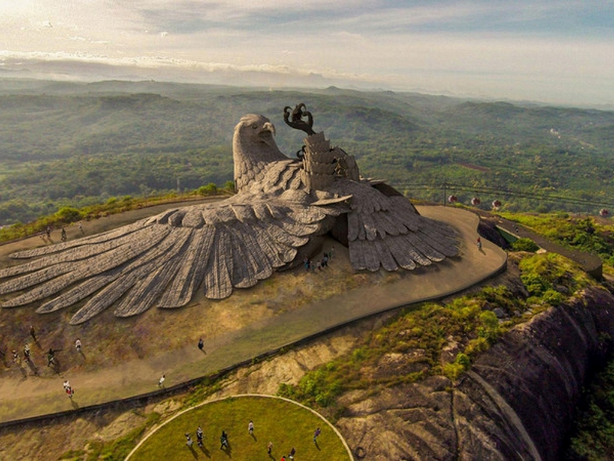
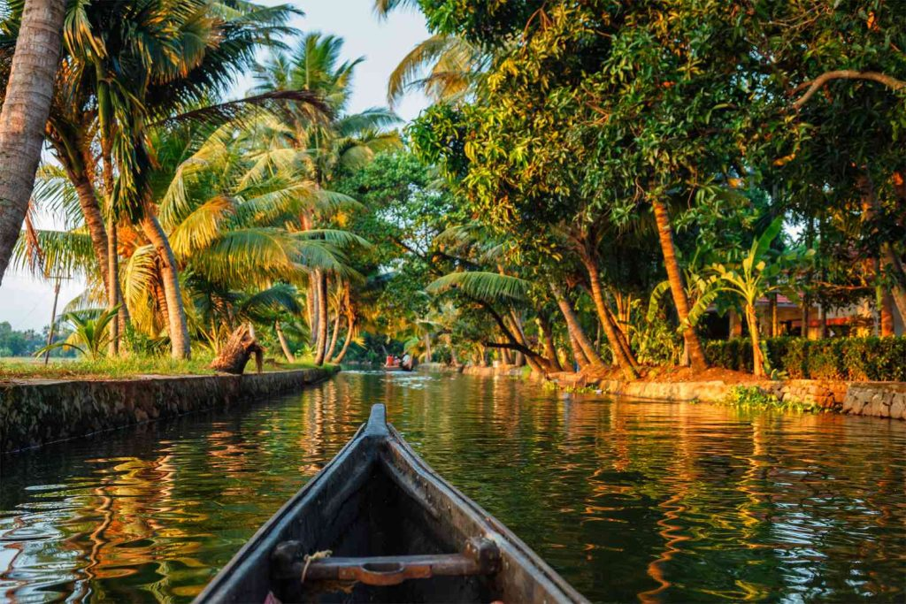
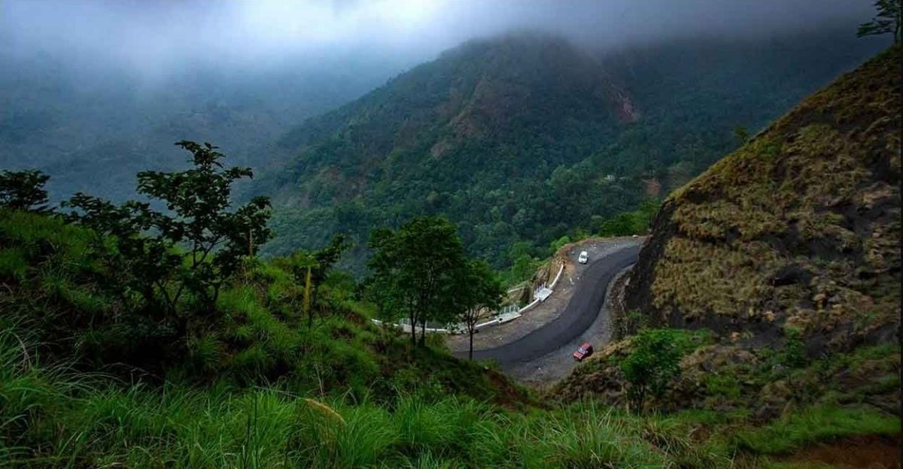
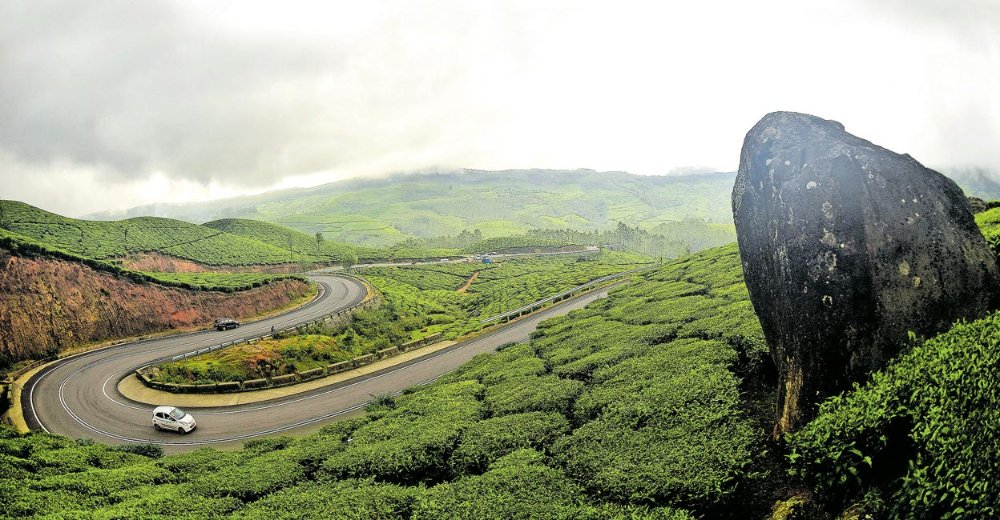

15 May 2024 24510 views
Every traveller yearns to travel back to the roots, where life sprouted and developed. Our tryst with nature is what will reflect our inner selves, our essence. At the lap of mother earth lie all the answers to our worries, troubles, and dilemmas. We can redefine ourselves; identify the true meaning of life, away from the concrete jungle and skyscrapers. To breathe the fragrance of tranquillity, plan your road trip to Kerala at the earliest.
Kerala is nature's beauty metamorphosed. As the tagline of the state tourism says, it is "god's own country."" The travel across the state has rendered us with moments to cherish for the years to come. The lush green locales, the enchanting tea estates, the silent estuaries, lagoons, and the tranquil atmosphere around the state elevated our soul to another plane.
Hopefully, the Kerala road trip itinerary here will be helpful to you on planning the trip. You can travel by bike, or rent a taxi from established services if you want to visit the places scattered across the state.
Road Trip Options In Kerala
We are elaborating on road trip options in Kerala here. The best option may be chosen according to the availability of time, budget available, and the area you want to explore.
1. Trivandrum to Kollam (*2-3 days)
The capital of Kerala, Trivandrum, is located at the southern tip of the state. Sharing its border with Tamil Nadu, the city has beaches, greeneries, and other attractions to offer. One half-hour biking from Trivandrum will take you to Kanyakumari, one of the most beautiful beaches in India. You can return to the city after enjoying the sunset/ sunrise there. Go around and visit Kovalam beach, Ponmudi (the Golden Peak), Padmanabha Swamy temple, etc.
On the way to Kollam, you can stop by Varkala and have a bath at the serene cliff beach. Never miss out on visiting Jatayu Earth Centre, where you will find the largest bird sculpture in the world. You can also go for a bike ride to Palaruvi waterfalls, Punalur suspension bridge, and Thenmala butterfly safari park.
2. Alappuzha to Changanassery (1-2 days)
The road from Alappuzha to Changanassery is adorned with beautiful greenery. The well-maintained road bifurcates paddy fields and other plantations. Being less crowded, you can breath-in fresh air and dip yourself into the calm surroundings. Stop at Kuttanad, renowned as the rice bowl of Kerala, and have a look at the wide paddy fields.
Changanassery offers natural and beautiful locations to visit. Located approximately 30 kilometers away is Kumarakom bird sanctuary.
3. Kottayam to Vagamon (2-3 days)
One of the most panoramic roads in Kerala, the Kottayam-Vagamon route will present you with hills slumbering on the lap of the sky. As you bike through the turns, twists, slopes, and climbs, cool breeze will caress your body, rejuvenating your soul. The feeling will be etched on your heart forever that it will rush into your mind whenever you think of Kerala in the future.
Although Vagamon is an adventurer's paradise, family and kids too will enjoy the trip to the place. Trekking expeditions on the pristine hills of the place will be one of a kind experience for you.
4. Kochi to Munnar (3-4 days)
Initially, you can indulge yourself in the busy life of Kochi, the most happening city in the state. Other than the colours and cacophony of the city, it offers several attractions including Fort Kochi, Jew Street, Marine Drive, and Kadamakkudy.
The trip from Kochi to Munnar will take 4-5 hours. You may not be able to ride fast as the natural beauty on the way, as if a magnificent painting, will ask you to slow down and imbibe it. Rent a room at one of the resorts, according to your budget, among the green-carpeted tea estates. Feel the solace seeping inside, get up in the morning, absorb the morning sun spreading through the greens, and realize that you are at one of the most beautiful locations on earth.
5. Munnar to Thekkady (2-3 days)
Travel from the tea plantations to the wildness of the Periyar Tiger Reserve. Plan boating and contemplate the wild beauty spread in front of you. You may chance upon herds of elephants, Nilgiri Tahr, Deers, Wild Boar, monkeys, and other animals.

Budget For the Road Trip in Kerala
You can choose hotels to stay in depending upon your budget. Serving tourists from every spectrum of society, you will find hotels providing accommodation of varying range. Starting from five-star facilities to budget hotels and dormitories, you will find every kind of stay across the state.
Kerala could be considered as one of the most budget-friendly travel destinations. Finding your favourite food delicacy also won't be any problem. You will find a plethora of food options at most of the places in Kerala. Therefore, you can plan the road trip in Kerala unconcerned about both stay and food.
Safety
It will not be an exaggeration if we say Kerala is the safest travel destination in India. With a 100% literacy rate and advanced medical and educational infrastructure, Kerala enjoys top spot in female education, male/female ratio, secularism, and lower crime rates. People are also friendly and hospitable. Here you will not find sellers pouncing upon tourists as though vultures, as found in many parts in India.
Once you are in Kerala, you will understand that such diverse beauty cannot be found anywhere else in the world. Therefore, just prepare yourself, pack your bags, and get ready for the trip to Kerala. The land of Spices, Ayurveda, Kathakali, Snake Boat race, ethnic culture, and heritage is awaiting you. You can also find similar road trips and tourism features from genuine Indian travel blogs.
Whatever kind of vehicle you choose, you must be comfortable with it. So before starting to ride, you need to know more about best motorcycles or bikes in India to ride comfortably. You can also hire two-wheeler on rent in Kochi or Munnar. Alternatively, you can buy an affordable used car in Kerala, in case you are planning to stay here for a while to explore the state to the optimum.
Author Bio : Jakes
Jakes has been an avid reader and passionate dreamer since childhood. He has two books to his credit, The Ribbon Trap, and Those Naked Lies. A master of unique themes and brilliant storyline, his books give a different reading experience.